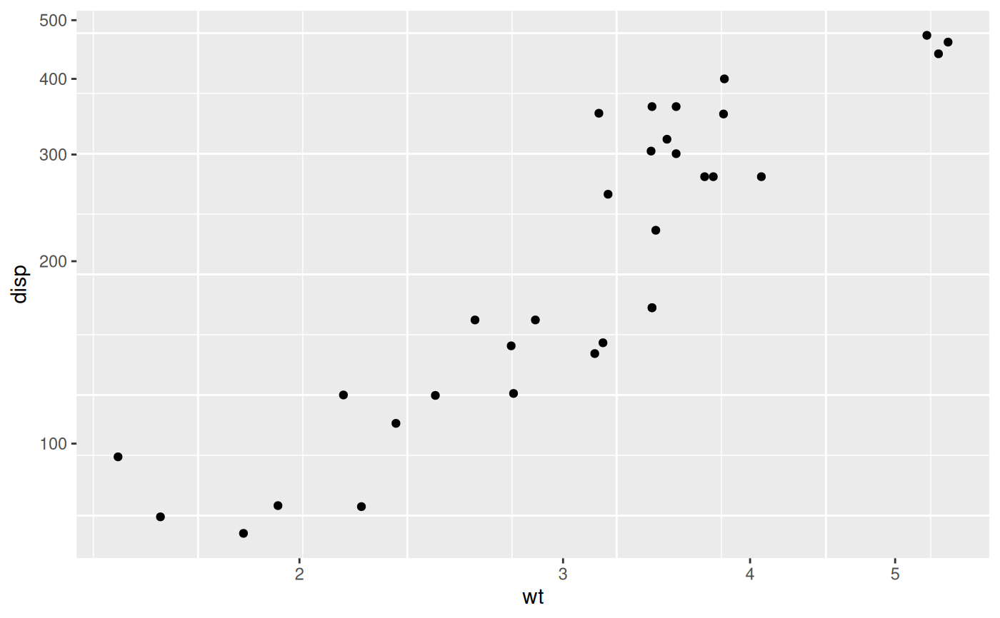

Transformed and flipped Cartesian coordinate system
Source:R/coord_trans_flip.R
coord_trans_flip.Rdcoord_trans_flip behaves similarly to ggplot2::coord_trans() in that it
occurs after statistical transformation and will affect the visual appearance
of geoms. The main difference is that it also flips the x and y coordinates
like ggplot2::coord_flip().
Usage
coord_trans_flip(
x = "identity",
y = "identity",
xlim = NULL,
ylim = NULL,
clip = "on",
expand = TRUE
)Arguments
- x, y
Transformers for x and y axes or their names.
- xlim, ylim
Limits for the x and y axes.
- clip
Should drawing be clipped to the extent of the plot panel? A setting of
"on"(the default) means yes, and a setting of"off"means no. In most cases, the default of"on"should not be changed, as settingclip = "off"can cause unexpected results. It allows drawing of data points anywhere on the plot, including in the plot margins. If limits are set viaxlimandylimand some data points fall outside those limits, then those data points may show up in places such as the axes, the legend, the plot title, or the plot margins.- expand
If
TRUE, the default, adds a small expansion factor to the limits to ensure that data and axes don't overlap. IfFALSE, limits are taken exactly from the data orxlim/ylim.
Examples
library(ggplot2)
ggplot(mtcars, aes(disp, wt)) +
geom_point() +
coord_trans_flip(x = "log10", y = "log10")
